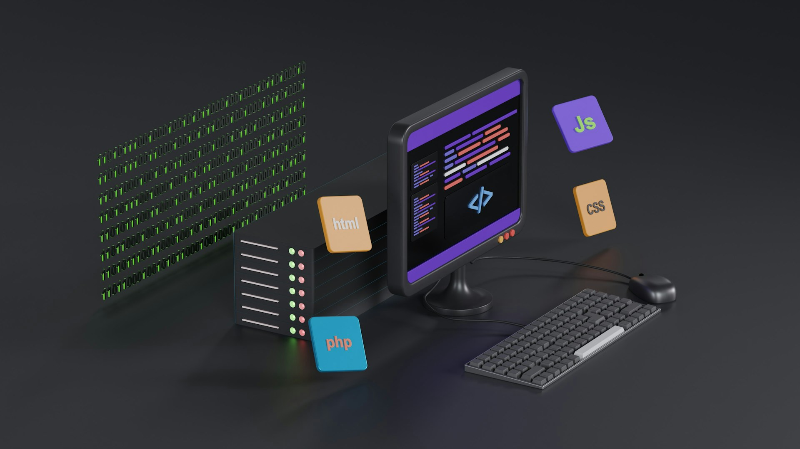

プログラミング学習を行うための
4つのステップ
STEP1
PCとネット環境を整える
プログラミングを行うには、PCとネット環境があればできます。PCを新たに購入する場合は、CPUはCore i5・メモリは8GBのマシンを用意することがおすすめです。


STEP2
環境構築を行う
プログラミングを行うには、プログラムを動かすためのソフトウェアやアプリが必要です。学ぶ言語や使用している端末に応じて、インストールを行いましょう。
STEP3
プログラミングの基礎を学ぶ
環境構築を行った後は、プログラミングの基礎を学びましょう。分からないこともたくさん出てくると思います。色んなサイトを見ながら1つずつ確実に学んでいきましょう。

STEP4
学びと実践を繰り返してシステムを作ってみる
インプットとアウトプットを繰り返して、1つのシステムを作りましょう。プログラミングは、インプットするだけでは意味がありません。実際にWebページやシステムを作ってみることで、自分の力が付きます。また、作ったシステムは、転職や就職の際にポートフォリオとしても活用できます。
たった1ヶ月のすきま時間からでもでも
プログラミングスキルは身につけられます
プログラミングを効率よく学びたい方は、ぜひスキルハックスの受講をご検討ください！